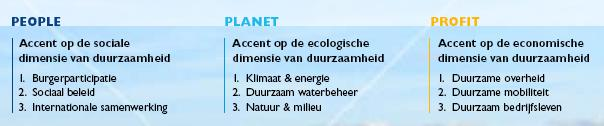

Duurzaamheidsmeter 2009/2010
introductie
De Lokale Duurzaamheidsmeter wordt iedere vier jaar geactualiseerd. De laatste editie is ontwikkeld in 2009. In november 2009 is een stand van zaken opgemaakt. De ranglijst en het rapport vindt u terug in het menu 'stand van zaken 2009'
De Lokale Duurzaamheidsmeter is een procesinstrument, dus ook na november 2009 kunnen gemeenten de vragenlijsten invullen.
De Lokale Duurzaamheidsmeter volgt de drie pijlers van duurzaamheid, te weten People, Planet en Profit. De drie vragenlijsten zijn vervolgens onderverdeeld in 3 thema's:

Digitaal invullen
Via deze pagina kunt u de vragenlijsten eenvoudig invullen op een moment dat u daar tijd en ruimte voor heeft. U kunt bovenaan deze pagina een van de vragenlijsten kiezen: people, planet of profit. Vervolgens kiest u de link 'vragenlijst'.
Resultaten
De resultaten worden geanalyseerd en gepubliceerd in een rapportage. Op die manier kunnen gemeenten hun score vergelijken met andere gemeenten. Daarnaast kunnen gemeenten op elk moment hun score actualiseren en raadplegen via de website.
De pagina's gemeenten, provincie, antwoorden en ranglijst worden pas gevuld wanneer gemeenten de lijsten invullen.
Helpdesk
Heeft u vragen bij het invullen van de lijsten? Neem dan contact met ons op. We staan u graag te woord!
Helpdesk Lokale Duurzaamheidsmeter
T (072) 520 25 17
E info@duurzaamheidsmeter.nl
Duurzaamheidsmeter 2009/2010
ontwikkeld door: Thijs de la Court
inhoud:
COS Noord-Holland
graphic design:
Kuki & Ko
database development & hosting:
Suares & Co
gis map geleverd door
Geodan
Aan deze website kunnen geen rechten worden ontleend.